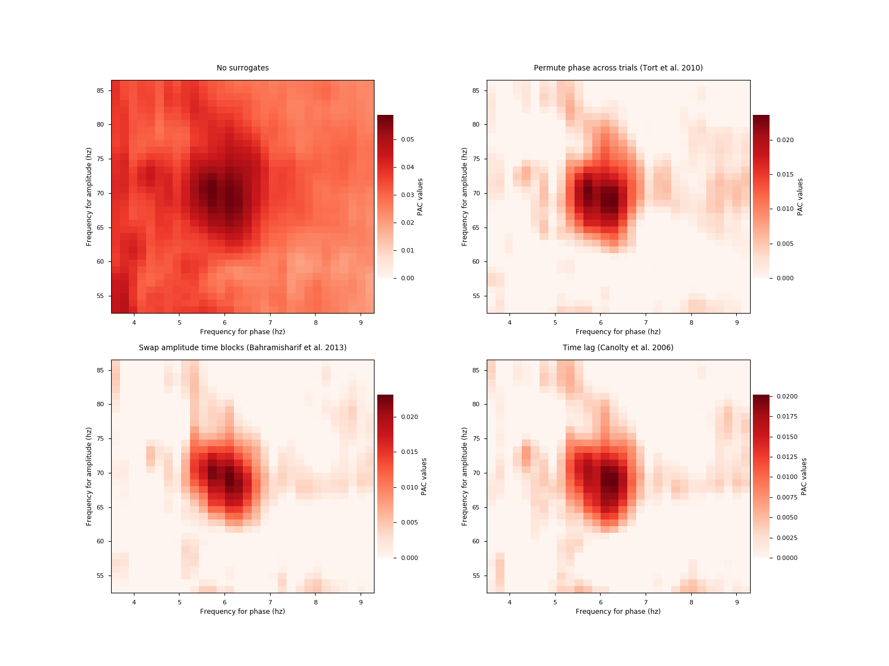

Note
Click here to download the full example code
Compare surrogate methods¶
Surrogates are used to generate a chance ditribution in order to correct the PAC estimation.
from __future__ import print_function
import matplotlib.pyplot as plt
from tensorpac import Pac
from tensorpac.signals import pac_signals_wavelet
plt.style.use('seaborn-paper')
# First, we generate a delta <-> low-gamma coupling. By default, this dataset
# is organized as (n_epochs, n_times) where n_times is the number of time
# points.
n_epochs = 20 # number of datasets
sf = 512. # sampling frequency
data, time = pac_signals_wavelet(sf=sf, f_pha=6, f_amp=70, noise=3.,
n_epochs=n_epochs, n_times=4000)
# First, let's use the MVL, without any further correction by surrogates :
p = Pac(f_pha=(3, 10, 1, .2), f_amp=(50, 90, 5, 1), dcomplex='wavelet',
width=12)
# Now, we want to compare PAC methods, hence it's useless to systematically
# filter the data. So we extract the phase and the amplitude only once :
phases = p.filter(sf, data, ftype='phase')
amplitudes = p.filter(sf, data, ftype='amplitude')
plt.figure(figsize=(16, 12))
for i, k in enumerate(range(4)):
# Change the pac method :
p.idpac = (5, k, 1)
# Compute only the PAC without filtering :
xpac = p.fit(phases, amplitudes, n_perm=10)
# Plot :
plt.subplot(2, 2, k + 1)
p.comodulogram(xpac.mean(-1), title=p.str_surro, cmap='Reds', vmin=0)
plt.show()
Total running time of the script: ( 0 minutes 10.258 seconds)